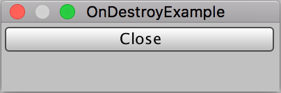

EditorWindow.OnDestroy()
Description 描述
OnDestroy is called to close the EditorWindow window.

A simple example of OnDestroy()
// OnDestroy example. // Close the window when the Button is pressed. The window // will receive an OnDestroy() call.
using UnityEngine; using UnityEditor;
public class OnDestroyExample : EditorWindow { [MenuItem("Examples/OnDestroyExample")] static void Init() { GetWindow<OnDestroyExample>("OnDestroy"); }
void OnGUI() { if (GUILayout.Button("Close")) { this.Close(); } }
void OnDestroy() { Debug.Log("Destroyed..."); } }